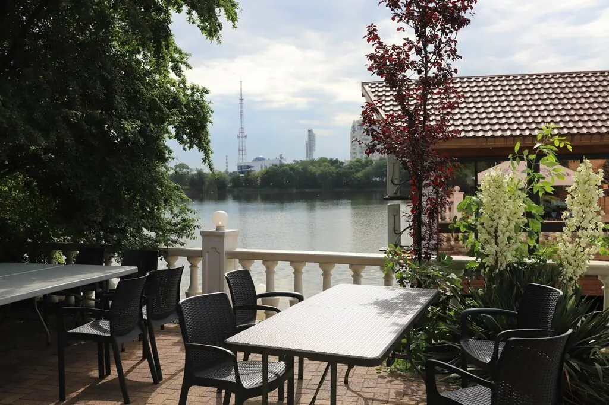
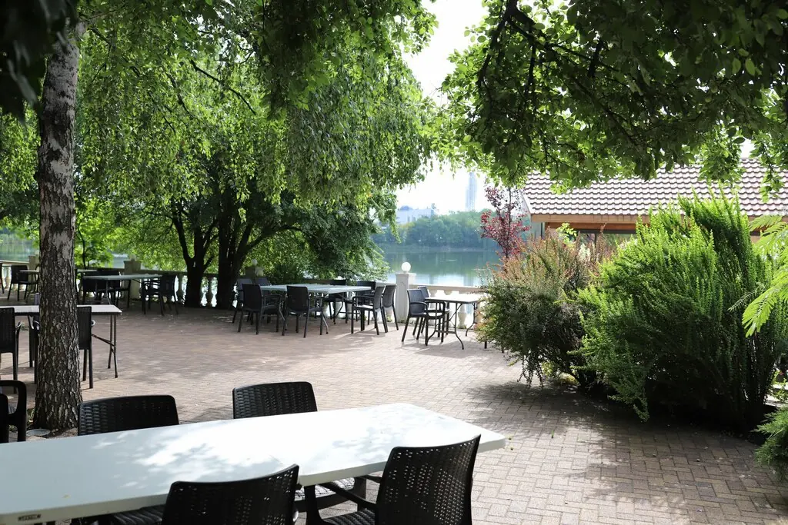
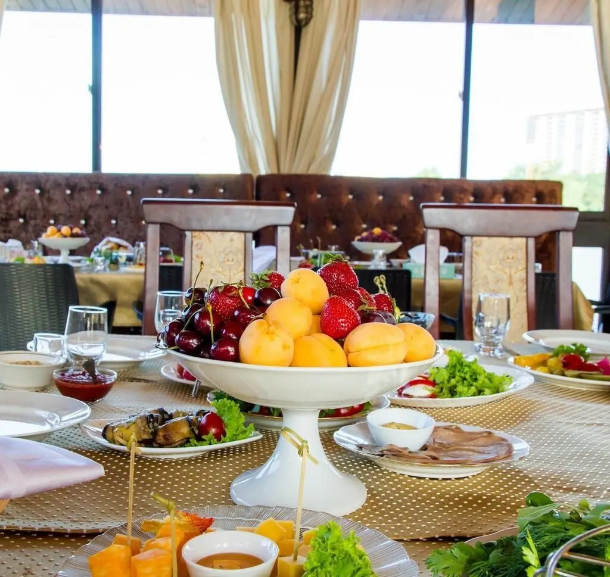
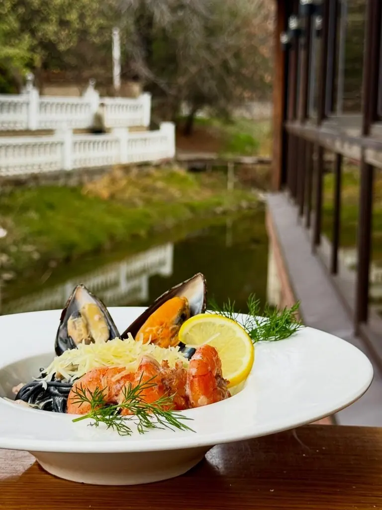
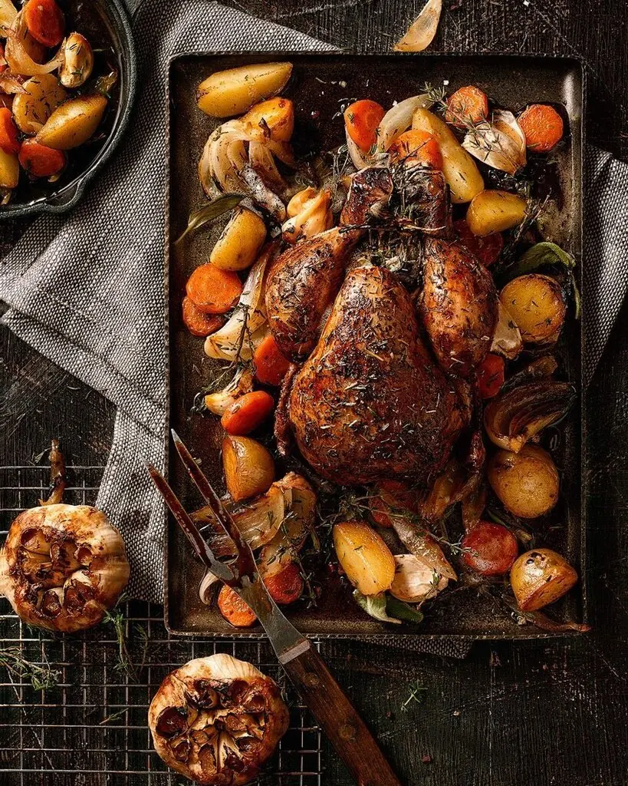
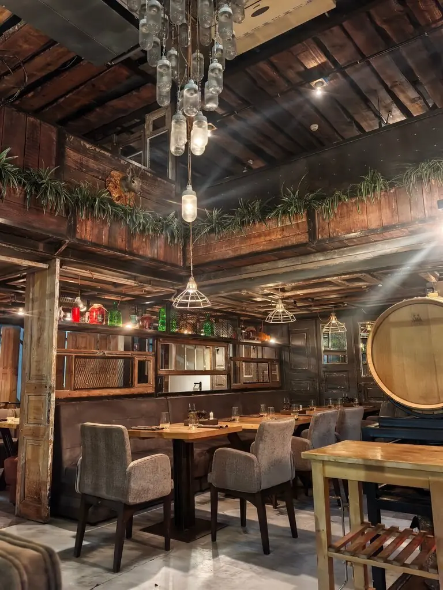
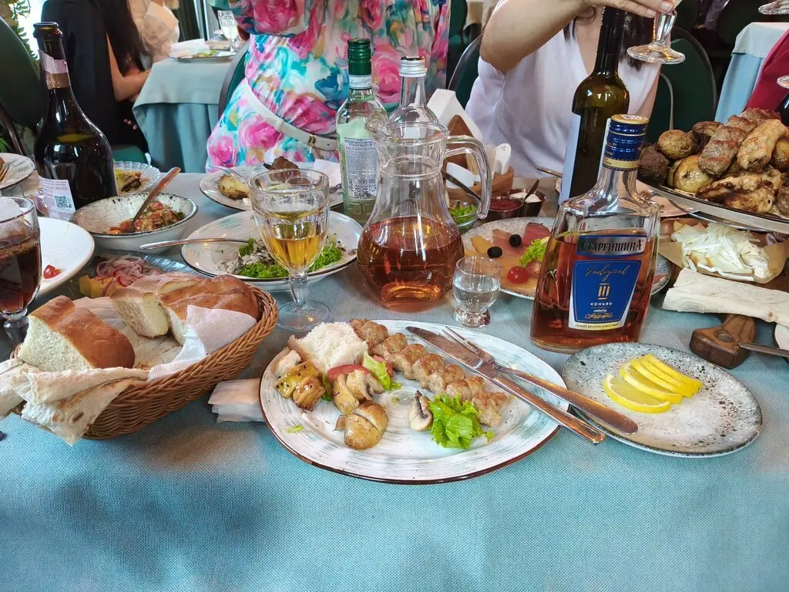

Белая
берёза
Стол у самой воды: озеро, зелёная терраса, живая музыка и шашлык, ради которого сюда возвращаются.
4,7оценка на картах1354оценки гостей


Лягушки,
берёза и обед
Сидишь под берёзой, лягушки квакают, кошаки толстые бродят, играет приятная музыка.Хоч Поч, гость из отзывов
Кавказская и европейская кухня, большая летняя терраса с панорамным видом и зал на случай дождя. Заезжают на обед, остаются до вечера.
Что на столе
Часть меню с Яндекс Карт, цены уточняйте у официанта.
Как тут бывает





Свадьба у воды или корпоратив на всех
Много места, внимательный персонал и танцпол под открытым небом. Расскажите, что задумали, администратор перезвонит.
до 550гостей на площадке